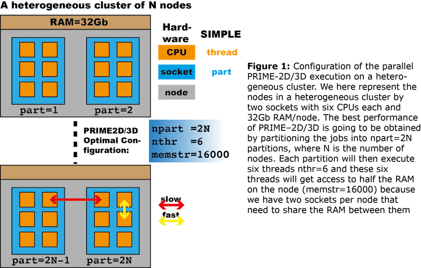
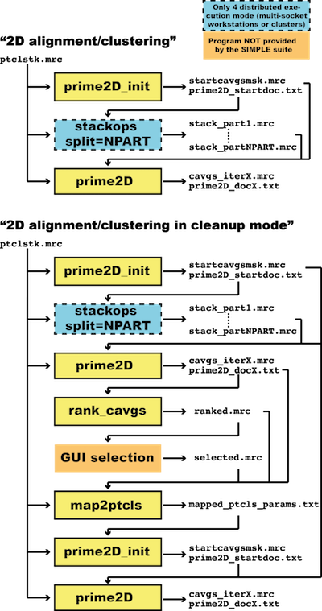
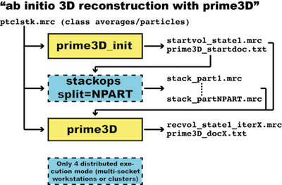

On any machine with a single socket (laptop or workstation) it is seldom worth the effort to go beyond the shared-memory parallelisation that we provide using the OpenMP protocol. The shared-memory parallelisation is controlled by the nthr key (for number of threads). If your machine has six physical cores and no hyper-threading set nthr=6 to use all the resources and nthr=3 to use half the resources. If your machine is hyper-threaded, you may gain performance by increasing the number of threads, depending on the hardware architecture and current workload on the machine. If you have more than one CPU socket on the machine substantial performance enhancements will be gained by executing SIMPLE in distributed mode using the program distr_simple.pl in the SIMPLE/scripts folder. This program fetches machine-specific information that the system administrator (that may be you) is responsible for providing in the simple_user_input.pm file. This is how the configuration file looks for a workstation or cluster with any number of sockets, six CPUs per socket and 16GB RAM
#####################################################################
# USER-DEFINED VARIABLES THAT CONTROL WHICH CLUSTER ENVIRONMENT TO #
# USE AND HOW TO USE THE RESOURCES #
#####################################################################
our$SIMPLESYS = 'LOCAL'; # Name of system
our%DISTR_ENV = %LOCAL_DISTR_ENV; # Defines the environment
our$EMAIL = 'myname@uni.edu'; # e-mail for failure report
our$NTHR = 6; # number of threads (CPUs per core)
our$MEMSTR = '8000'; # string descriptor for memory
our$TIME_PER_IMAGE = 150; # time per image (in seconds)
If we had eight CPUs per socket and 32GB RAM we would have changed the number of threads to $NTHR=8 and the requested memory to $MEMSTR=16000. We will describe what the $SIMPLESYS and %DISTR_ENV variables control after we have discussed how to optimise distributed execution of SIMPLE on any heterogeneous computer cluster (Figure 1, below).

Every cluster is equipped with a job scheduler/workload manager that needs to be configured. The two most common job schedulers are SLURM (Simple Linux Utility for Resource Management) and PBS (Portable Batch System). We prefer SLURM, since it is a more modern and versatile job scheduler than PBS. All the instructions that need to be provided to the job scheduler have been separated out and put in the perl configuration module scripts/simple_clusterSpecs.pm. A typical SLURM configuration is defined as
####################################################################
# DEFINES DISTRIBUTED EXECUTION ON MYCLUSTER #
####################################################################
our%MYCLUSTER_DISTR_ENV;
$MYCLUSTER_DISTR_ENV{'SUBMITCMD'}='sbatch';
$MYCLUSTER_DISTR_ENV{'SCRIPT'}="#!/bin/bash
#SBATCH --mail-user=<<<<EMAIL>>>>
#SBATCH --mail-type=FAIL
#SBATCH --job-name=$NAME_DISTR
#SBATCH --ntasks=1
#SBATCH --ntasks-per-socket=1
#SBATCH --cpus-per-task=<<<NTHR>>>
#SBATCH --mem=<<<MEMSTR>>>
#SBATCH --time=0-<<<HOURS>>>:<<<MINUTES>>>:0
#SBATCH --output=outfile.%j
#SBATCH --error=errfile.%j
cd <<<EXECDIR>>>
<<<CMDSTRING>>> fromp=<<<START>>> top=<<<STOP>>> part=<<<PART>>>&
&nthr=<<<NTHR>>> outfile=$ALGNDOC_FBODY<<<PART>>>.txt > OUT<<<PART>>>\nexit\n";
$MYCLUSTER_DISTR_ENV{'SHMEMSCRIPT'}="#!/bin/bash
#SBATCH --mail-user=<<<<EMAIL>>>>
#SBATCH --mail-type=FAIL
#SBATCH --job-name=$NAME_SHMEM_DISTR
#SBATCH --ntasks=1
#SBATCH --ntasks-per-socket=1
#SBATCH --cpus-per-task=<<<NTHR>>>
#SBATCH --mem=<<<MEMSTR>>>
#SBATCH --time=0-<<<HOURS>>>:<<<MINUTES>>>:0
#SBATCH --output=shmemoutfile.%j
#SBATCH --error=shmemerrfile.%j
cd <<<EXECDIR>>>
<<<CMDSTRING>>> nthr=<<<NTHR>>> > SHMEMJOBOUT\nexit\n";
The & character denotes a line break and the substitution tag
<<<MYVARIABLE>>>
describes variables that will be automatically substituted into the scripts. The variables $NAME_DISTR and $NAME_SHMEM_DISTR are local to the module and describe the hardcoded names of the distribution scripts. In order to make the newly defined distributed environment accessible to SIMPLE we need to export it by adding it to the export array in the header of the module, so that the line
@EXPORT = qw($ALGNDOC_FBODY %LOCAL_DISTR_ENV %MASSIVE_DISTR_ENV&
&%MASSIVE2_DISTR_ENV %MONARCH_DISTR_ENV %OXFORD_DISTR_ENV&
&%OXFORD2_DISTR_ENV %OXFORD3_DISTR_ENV $CVL_DISTR_ENV);
is updated to
@EXPORT = qw($ALGNDOC_FBODY %LOCAL_DISTR_ENV %MASSIVE_DISTR_ENV&
&%MASSIVE2_DISTR_ENV %MONARCH_DISTR_ENV %OXFORD_DISTR_ENV&
&%OXFORD2_DISTR_ENV %OXFORD3_DISTR_ENV $CVL_DISTR_ENV)&
&%MYCLUSTER_DISTR_ENV;
There are different versions of SLURM and PBS and different clusters may use different conventions for how to construct the script headers. For example on our MASSIVE2 cluster we need to add to the headers
#SBATCH --partition=cryoem
#SBATCH --qos=vip_m2
to indicate that we will use our dedicated cryoem partition and our dedicated queue vip_m2. In simple_clusterSpecs.pm there is also a template available for PBS
####################################################################
# DEFINES DISTRIBUTED EXECUTION ON THE MASSIVE 1 CLUSTER #
####################################################################
our%MASSIVE_DISTR_ENV;
$MASSIVE_DISTR_ENV{'SUBMITCMD'}='qsub';
$MASSIVE_DISTR_ENV{'SCRIPT'}="#!/bin/bash
#PBS -N $NAME_DISTR
#PBS -l nodes=1:ppn=<<<NTHR>>>,mem=<<<MEMSTR>>>
#PBS -l walltime=<<<HOURS>>>:<<<MINUTES>>>:0
#PBS -o outfile.\$PBS_JOBID
#PBS -e errfile.\$PBS_JOBID
cd <<<EXECDIR>>>
<<<CMDSTRING>>> fromp=<<<START>>> top=<<<STOP>>> part=<<<PART>>>&
&nthr=<<<NTHR>>> outfile=$ALGNDOC_FBODY<<<PART>>>.txt > OUT<<<PART>>>\nexit\n";
$MASSIVE_DISTR_ENV{'SHMEMSCRIPT'}="#!/bin/bash
#PBS -N $NAME_SHMEM_DISTR
#PBS -l nodes=1:ppn=<<<NTHR>>>,mem=<<<MEMSTR>>>
#PBS -l walltime=<<<HOURS>>>:<<<MINUTES>>>:0
#PBS -o outfile.\$PBS_JOBID
#PBS -e errfile.\$PBS_JOBID
cd <<<EXECDIR>>>
<<<CMDSTRING>>> nthr=<<<NTHR>>> > SHMEMJOBOUT\nexit\n";
but PBS does not provide any means to bind a set of threads to a particular socket. However, by utilising the mpirun command we can enforce this desired behaviour as exemplified below
####################################################################
# DEFINES DISTRIBUTED EXECUTION ON SUSANS CLUSTER IN OXFORD #
####################################################################
our%OXFORD_DISTR_ENV;
$OXFORD_DISTR_ENV{'SUBMITCMD'}='qsub';
$OXFORD_DISTR_ENV{'SCRIPT'}="#!/bin/bash
#PBS -N $NAME_DISTR
#PBS -l nodes=1:ppn=<<<NTHR>>>,mem=<<<MEMSTR>>>
#PBS -l walltime=<<<HOURS>>>:<<<MINUTES>>>:0
#PBS -o outfile.\$PBS_JOBID
#PBS -e errfile.\$PBS_JOBID
#PBS -V
#PBS -l naccesspolicy=UNIQUEUSER
cd <<<EXECDIR>>>
mpirun -np 1 --bind-to-socket --cpus-per-proc <<<NTHR>>> <<<CMDSTRING>>>&
&fromp=<<<START>>> top=<<<STOP>>> part=<<<PART>>> nthr=<<<NTHR>>>&
&outfile=$ALGNDOC_FBODY<<<PART>>>.txt > OUT<<<PART>>>\nexit\n";
$OXFORD_DISTR_ENV{'SHMEMSCRIPT'}="#!/bin/bash
#PBS -N $NAME_SHMEM_DISTR
#PBS -l nodes=1:ppn=<<<NTHR>>>,mem=<<<MEMSTR>>>
#PBS -l walltime=<<<HOURS>>>:<<<MINUTES>>>:0
#PBS -o outfile.\$PBS_JOBID
#PBS -e errfile.\$PBS_JOBID
#PBS -V
#PBS -l naccesspolicy=UNIQUEUSER
cd <<<EXECDIR>>>
mpirun -np 1 --bind-to-socket --cpus-per-proc <<<NTHR>>> <<<CMDSTRING>>>&
&nthr=<<<NTHR>>> > SHMEMJOBOUT\nexit\n";
Once our environment for distributed execution is established we use the Program: distr_simple.pl, which supports distributed execution of the programs:
simple_prime2D
simple_prime3D
simple_eo_recvol
simple_recvol
simple_simemimgs
We normally let distr_simple.pl run in the background on the login node of our cluster. We will discuss the execution routes in more detail in the Workflows section but an example of how to distribute simple_prime2D using ten nodes is provided below. In order to reduce I/O latency we split the CTF phase-flipped image stack into as many partitions (npart) as we plan to execute
$ simple_stackops stk=my_phaseflipped_ptcls.mrc split=npart
Then, we are ready to execute in distributed mode
$ nohup distr_simple.pl prg=prime2D npart=10 stk=ptcls.mrc smpd=1.77 msk=100
ncls=600 refs=startcavgsmsk.mrc oritab=prime2D_startdoc.txt >> PRIME2DOUT &
Another option available on clusters that use the SLURM scheduler is to use the srun command for distr_simple.pl via
$ srun --ntasks=1 --ntasks-per-socket=1 --cpus-per-task=1 --mem=200 --time=2-0:0:0
--output=PRIME2DOUT.%j --error=PRIME2DERR.%j distr_simple.pl prg=prime2D
npart=10 stk=ptcls.mrc smpd=1.77 msk=100 ncls=600 refs=startcavgsmsk.mrc
oritab=prime2D_startdoc.txt &
However, beta testers have reported that srun job sometimes dies with no warning, possibly because of the low tolerance for network errors. A more robust route may be to use sbatch as follows
$ sbatch -p MYCLUSTER --wrap="distr_simple.pl prg=prime2D npart=10 stk=ptcls.mrc
smpd=1.77 msk=100 ncls=600 refs=startcavgsmsk.mrc oritab=prime2D_startdoc.txt
>> PRIME2DOUT"
where the -wrap flag automatically generates a bash script for the given command.
SIMPLE uses the same CTF convention as CTFFIND with the exception that defocus values are inputted in microns rather than Angstroms. The astigmatism angles are in units of degree. If you have a particle stack of uncorrected windowed single-particle images and you wish to multiply them with the sign of the CTF (phase flipping), please create a text file looking like
dfx=2.56 dfy=2.76 angast=30.5
dfx=3.50 dfy=3.33 angast=60.0
dfx=1.98 dfy=2.02 angast=120.5
...
with the same number of lines as the number of images in the stack, so that there is a one-to-one correspondence between each line of CTF parameters in the text file and each particle image in the stack. Now, use the program simple_stkops to phase flip the stack
$ simple_stackops stk=ptcls.mrc smpd=2 deftab=ctfparams.txt
ctf=flip kv=300 cs=2.7 fraca=0.07 outstk=ptcls_phflip.mrc
and use the corrected stack ptcls_phflip.mrc as input for the remaining workflows. We provide a solver for the problem of simultaneous alignment and clustering of cryo-EM images (SAC) implemented in the program simple_prime2D. It is assumed that you have a SPIDER or MRC stack of phase flipped particle images (see above). The flowcharts of the workflows involving simple_prime2D are depicted in the flowchart.
There are two modes of execution: plain "2D alignment/clustering", assuming that you have a clean and nice data set with not too much junk, such as ice contamination or particle aggregation. You begin executing simple_prime2D_init to produce the files
startcavgsmsk.mrc
prime2D_startdoc.txt
containing the random references and random clustering solution. These files are are next used as input to simple_prime2D. However, if you are planning on executing SIMPLE on a multi-socket workstation or cluster using distr_simple.pl you have to split the stack into as many partitions (nodes) you are planning to run your job on. This step is necessary for reducing I/O latency. On single-socket machines it is not necessary to split the stack.
The files generated from simple_prime2D_init are inputted into simple_prime2D together with the particle stack and a few control parameters, such as sampling distance (smpd), mask radius in pixels (msk), number of desired clusters (ncls) and low-pass limit (lp). The default low-pass limit is set to lp=20 Å which is suitable for all particles with a molecular weight above 300 kDa. You may have to include higher frequency components to obtain a good clustering solution for smaller molecules but beware of the problem of overfitting. If too much high frequency information is included in the search, the solution obtained may be dominated by noise.
We also provide a "cleanup" workflow for the processing of more challenging data sets. Perhaps your particles were automatically boxed and the stack includes a lot of false positives, such as ice contamination, particle aggregation, hole edges etc. The first part of the "cleanup" workflow is identical to the original workflow. Next, the final class averages obtained with the first pass of clustering are ranked according to decreasing population with simple_rank_cavgs and a GUI (we use EMAN) is used to remove unwanted class averages. The program simple_map2ptcls is then applied to map your manual selection of class averages back to the particle images. The selection is communicated via a text document named mapped_ptcls_params.txt by default. Every particle image receives a state assignment of one by default (state=1) and the particles corresponding to deleted class averages are assigned a state label of zero (state=0) in the outputted document. This prevents them from being considered in future processing steps. In order to obtain a "clean" clustering solution, execute the original workflow again but now inputting the mapped_ptcls_params.txt document to the simple_prime2D_init initialiser in order to propagate the selection.

We provide an ab initio 3D reconstruction algorithm that operates either on class averages or on individual particle images. For small data sets (<10,000) images it is usually a better idea to skip the 2D alignment/clustering step and go directly to PRIME3D. For larger data sets or data sets with a lot of contamination, such as ice, particle aggregation etc. we advise running PRIME2D first in "cleanup" mode and calculating an ab initio map from "clean" class averages. The 3D PRIME algorithm is implemented in the program simple_prime3D.
It is assumed that you have a SPIDER or MRC stack of class averages or phase flipped particle images. The flowchart for the PRIME3D ab initio reconstruction workflow is depicted in Figure 3. You begin executing simple_prime3D_init to produce the files startvol_state1.mrc and prime3D_startdoc.txt containing the initial random reference and the orientations used to obtain it. These files are then used as input to simple_prime3D.
However, if you are planning on executing SIMPLE on a multi-socket workstation or cluster using distr_simple.pl you have to split the stack into as many partitions (nodes) you are planning to run your job on. This step is necessary for reducing I/O latency. On single-socket machines it is not necessary to split the stack. Next, the generated files are inputted to simple_prime3D together with the particle stack and a few control parameters, such as sampling distance (smpd) and mask radius in pixels (msk).
Details about how to run PRIME3D and how the initial low-pass limit is set and how it is updated throughout a PRIME3D run are described in the simple_prime3D section. To check the automatically determined low-pass limit range, use the simple_resrange program.
To further illustrate how to use the SIMPLE suite of programs, we provide the following comprehensive worked-out example, including all commands executed when reconstructing the D7 symmetric GroEL chaperonin. The same workflow was used to process a series of experimental datasets with high, low or no symmetry, described in our recent paper. The workflow consists of four major steps
Prior to 2D alignment and clustering, we begin by minimising the effect that off-centre particles could have on the subsequent steps. The method is not aimed at determining the rotational origin shifts exactly but only to roughly centre the particles in the box. This is done by bringing all particle images into broad register with respect to their 2D shifts only, regardless of their in-plane rotation.
simple_stkops with the argument shalgn=yes is used, providing our stack (stk=particles.spi), sampling distance (smpd=1.62) and mask radius in pixels (msk=60) as input
$ simple_stackops stk=particles.spi smpd=1.62 msk=60
shalgn=yes trs=3.5 lp=20 nthr=8 outstk=particles_sh.spi
The shift alignment is done with a hard low-pass limit of 20 Å (lp=20), as are most of the following steps. The iterative process will typically take a dozen iterations (a few minutes). The trs argument limits the shift search to the XXXXX
range. We typically set the trs argument to 2.5% of the image dimension (140). There are 8 CPUs on our machine so we set the number of threads nthr=8. A new centred stack (named according to the outstk argument) will be written to disk and we will use this one for the remainder of the workflow. A document named shiftdoc.txt by default that contains the calculated shifts is also created.
Next we generate random class averages to initiate the 2D clustering procedure. Given the modest size of our dataset (10,000 images) we choose ncls=200 to obtain sufficiently populated classes. We recommended increasing this number to at least 500 for larger datasets (>30,000 images).
$ simple_prime2D_init stk=particles_sh.spi smpd=1.62 msk=60 ncls=200 nthr=8
simple_prime2D_init will rapidly generate evenly populated class averages with random in-plane rotations. The stacks of 200 class averages are named startcavgsmsk.spi and startcavgs.spi (with and without mask). Next, we execute the 2D alignment and clustering in distributed mode
$ simple_stackops stk=particles_sh.spi split=1
$ nohup distr_simple.pl prg=prime2D stk=particles_sh.spi
oritab=prime2D_startdoc.txt refs=startcavgsmsk.spi ncls=200
srch_inpl=yes smpd=1.62 msk=60 lp=20 npart=1 > PRIME2DOUT &
The first instruction prepares the split stack for distributed execution. In our case we ran the clustering on a Linux workstation with 1 CPU chipset so we simply set split=1. If your machine has two chipsets, set split to 2 but keep in mind that the npart argument in the following instruction also needs to be set to 2. The second instruction starts the actual 2D clustering using the randomised classes as a starting point (refs argument). It will take approximately 15 iterations and a little under 2 hours on a modern workstation with 8 CPUs. In the last lines of the log file PRIME2DOUT you should see something looking like
>>> DISTRIBUTION OVERLAP: 0.9589
>>> PERCENTAGE OF SEARCH SPACE SCANNED: 99.6
>>> CORRELATION: 0.7521
>>> CONVERGED: .YES.
Our criterion for convergence is based the stability of the clusters obtained. In other words, when the cluster assignments are nearly identical from one iteration to the next (distribution overlap >95% on average) and the particles cannot find a better matching average (fraction of search space scanned >99%) the alignment and clustering stops. In addition, each run is structured as follows. Until near convergence (search space scanned <90%) only cluster assignment and in-plane rotations are searched. After this, shifts are also searched and their limit is automatically set to 2.5% of the image dimension (see above). Every iteration produces a folder named prime2D_round_XX that contains all the information to continue a run: a document with the current in-plane parameters (prime2Ddoc_XX.txt) and two stacks of the current 200 class averages (masked and unmasked).
A number of temporary files are also created but they are only used internally and will be automatically deleted at the end of the run. As computer and network failures are part of using workstations and supercomputers you will be able to continue an interrupted run using the files present in these self-contained folders. You can also automatically remove the temporary files by simply typing prime_cleanup.pl. Never do this while the application is running. It is also necessary to keep the current folder organised to avoid data loss and confusion. We do not need the split stack anymore, so type
$ rm stack_part*.spi
Visual examination of the 200 class averages (prime2D_round_15/cavgs_iter15.spi) shows numerous images with distinctive features of GroEL such as the double ring structure and the heptameric C-symmetric rings on a uniform grey background. One can also note blurrier images with less contrast. Typically, these correspond to lowly populated classes where the weaker SNR is likely to contribute little to the subsequent 3D reconstruction. Consequently, we rank the class averages by decreasing order of their population
$ simple_rank_cavgs stk=prime2D_round_15/cavgs_iter15.spi
oritab=prime2D_round_15/prime2Ddoc_15.txt outstk=ranked_cavgs.spi
After visual inspection of the ranked class averages (we use EMAN for this) we decide to discard the noisier/blurrier images by keeping the first 160 averages in the ranked stack. This discards clusters containing less than 30 images per class. We simply extract the top 160 averages using the command
$ simple_stackops stk=ranked_cavgs.spi fromp=1 top=160 outstk=selected_cavgs.spi
where fromp and top define the range of images to keep. With this reduced stack (selected_cavgs.spi) we will generate an ab initio 3D reconstruction of the molecule using simple_prime3D
We first need a random volume to initiate the search of the five in-plane and out-of-plane parameters of our selected class averages. As in the previous 2D analysis, we execute
$ simple_prime3D_init stk=selected_cavgs.spi smpd=1.62 msk=60 nthr=8 lp=20
Consistently with the previous section we use a low-pass limit of 20 Å (lp=20). This command will generate two files: a volume reconstructed from random orientation parameters (startvol_state1.spi) and the document containing these parameters (prime3D_startdoc.txt). We start the search with
$ simple_stackops stk=selected_cavgs.spi split=1
$ nohup distr_simple.pl prg=prime3D stk=selected_cavgs.spi
vol1=startvol_state1.spi smpd=1.62 msk=60 lp=20
oritab=prime3D_startdoc.txt npart=1 > PRIME3DOUT &
Again, we first split the stack for distributed execution. Then, we run simple_prime3D providing the randomised orientations (oritab argument) and volume (vol1 argument) that we have just prepared. After approximately 16 iterations the run converges. At the end of PRIME3DOUT you will find
>>> ANGLE OF FEASIBLE REGION: 14.1
>>> AVERAGE ANGULAR DISTANCE BTW ORIS: 2.4
>>> PERCENTAGE OF SEARCH SPACE SCANNED: 100.0
>>> CORRELATION: 0.9178
>>> ANGULAR SDEV OF MODEL: 40.81
>>> UPDATE LOW-PASS LIMIT: .NO.
>>> CONVERGED: .YES.
The recvol_state16.spi volume and the corresponding orientation parameters (prime3Ddoc_16.txt) are produced in the prime3D_round_16 folder. The volume is blobby but still captures the overall shape of GroEL. Keep in mind that we have so far made no assumption about symmetry and the volume has been reconstructed in the C1 symmetry group.
In order to symmetrise the volume, we need to identify the principal axis of symmetry given the known D7 point-group symmetry group of GroEL. This is done with simple_symsearch, given the C1 volume and orientation parameters (vol1 and oritab) and using the same low-pass limit as previously (lp=20). The symmetrised orientations are outputted in the text file sym_d7.txt (outfile argument). We identify the principal symmetry axis of the volume by executing
$ simple_symsrch vol1=prime3D_round_16/recvol_state1.spi smpd=1.62 msk=60
oritab=prime3D_round_16/prime3Ddoc_16.txt pgrp=d7 outfile=sym_d7.txt nthr=8
lp=20 > SYMOUT
The program prints the identified symmetry axis
>>> FOUND SYMMETRY AXIS ORIENTATION:
e1=276.596588 e2=80.9958649 e3=297.840454 x=0.00000000 y=0.00000000
mi=0.00000000 mi_hard=0.00000000 dist=180.000000 state=1.00000000
corr=0.787599325 w=1.00000000 class=1.00000000 mirr=0.00000000 frac=0.00000000
and we use simple_eo_recvol to reconstruct a symmetrised volume
$ simple_eo_recvol stk=selected_cavgs.spi
oritab=sym_d7.txt smpd=1.62 msk=60 nthr=8 pgrp=d7
Output is the optimal principal axis of symmetry (e1, e2 and e3 are the phi, theta and psi angles) along with its correlation (corr). It is likely that you will obtain different values for the axis of symmetry upon different runs. This is because of the stochastic nature of the 2D/3D analyses, which causes the 3D reconstruction to be arbitrarily oriented with respect to the principal symmetry axis. Nonetheless, the final volume is reproducible and captures the structure of GroEL as judged by the numerous existing crystallographic and EM structures.
With the new symmetrised orientation parameters of the class averages we now want to map this information back to the individual particle images. To do this we first create a text file called doclist.txt that contains a single line
$ ls -1 sym_d7.txt > doclist.txt
and then map the orientation parameters of the class averages to the particles (stk) by providing the selected class averages (stk2), all the original class averages (stk3) and the in-plane parameters obtained in the first simple_prime2D run (oritab) to the program simple_map2ptcls
$ simple_map2ptcls stk=particles_sh.spi stk2=selected_cavgs.spi
stk3=cavgs_iter16.spi oritab=prime2D_round_16/prime2Ddoc_16.txt
doclist=doclist.txt nthr=8
Next we reconstruct a symmetrised volume from the particles using the mapped orientation parameters (called mapped_ptcls_params.txt by default) and specifying the symmetry group (pgrp=d7)
$ simple_eo_recvol stk=particles_sh.spi oritab=mapped_ptcls_params.txt
smpd=1.62 msk=60 nthr=8 pgrp=d7
After several minutes we obtain a new volume (recvol_state1msk.spi) and its resolution
>>> RESOLUTION AT FSC=0.143 DETERMINED TO: 12.60
>>> RESOLUTION AT FSC=0.500 DETERMINED TO: 17.45
As recvol_state1msk.spi is the default name used internally by simple_prime3D it is best to rename it to avoid having it overwritten
$ mv recvol_state1msk.spi sym_recvol_state1msk.spi
simple_prime2D and simple_prime3D also produce a file fsc_state1.bin that contains the FSC plot. Make sure to backup this file as simple_prime3D will overwrite it if executed in the same folder. Here we just copy it because in the next step we will refine the volume and simple_prime3D will require the information contained in fsc_state1.bin to initiate the refinement
$ cp fsc_state1.bin eo_fsc_state1.bin
Finally, we refine our initial model while applying D7 symmetry with simple_prime3D
$ simple_stackops stk=particles_sh.mrc split=8
$ nohup distr_simple.pl prg=prime3D stk=groel-stk.spi
vol1=sym_recvol_state1msk.spi smpd=1.62 msk=60
eo=yes oritab=mapped_ptcls_params.txt npart=8 >
PRIME3DOUT2 &
With the first instruction we split the stack for distributed execution. Here the refinement run will be split over 8 different CPU sockets on a Linux cluster (split=8; see above for more details). We use simple_prime3D differently this time. Instead of setting a 20 Å low-pass limit, the resolution of the volume is calculated automatically at every iteration (eo=yes) starting from our symmetrised volume (vol1=sym_recvol_state1msk.spi). After the 10 iterations required for convergence, the final resolution (better than 8 Å) is printed in the end of the PRIME3DOUT2 output (and also stored in the fsc_state1.bin). Examination of the volume shows helical features consistent with the GroEL X-ray structure.
>>> RESOLUTION AT FSC=0.143 DETERMINED TO: 7.32
>>> RESOLUTION AT FSC=0.500 DETERMINED TO: 8.10
A note on overfitting: In contrast to most other packages, the only exception being Frealign, SIMPLE does all of its interpolations and correlation calculations in the Fourier domain. Other packages may argue that they do as well but there are subtle important differences. For example, Spider, EMAN and SPARX interpolate polar coordinates in real space and then calculate one-dimensional Fourier transforms along concentric rings to obtain their "polar Fourier transforms", which are in fact polar real images. The advantage of doing it in this way is that you can use a hard mask in real space and avoid including too much background noise in the representation. However, the fundamental disadvantage is that you loose the ability to control which Fourier components are being used for the matching. Initially, it was assumed that the low-pass filtering of the volume based on the FSC was sufficient to avoid overfitting. This has proven to not be true with this kind of representation, as both EMAN2 and SPARX now implement the "gold-standard approach". We instead use gridding interpolation in Fourier space to obtain our polar central sections. The minor disadvantage is that we have to apply a soft-edged mask in real space and risk introducing slightly more background noise in the representation. However, the major advantage is that we can control exactly which Fourier components we use for matching. The default high-pass limit is set to Fourier index 2 but if you think you have a lot of inelastic scattering at low resolution (this is typical for icosahedral viruses) you may want to change the high-pass limit via hp=X Å. The hard low-pass limit, when simple_prime3D is executed with eo=yes is set according to the FSC=0.143 criterion. We have yet to detect any overfitting visually or using the noise substitution test with this approach on standard EM data obtained with the underfocusing approach. However, while processing close-to-focus phase plate data we have observed severe overfitting and we recommend to battle it using a hard low-pass limitation with lpstop=X Å. If you do all your analyses with a hard low-pass limit of X and the resolution extends significantly beyond the limit, there should be no reason to worry about overfitting.